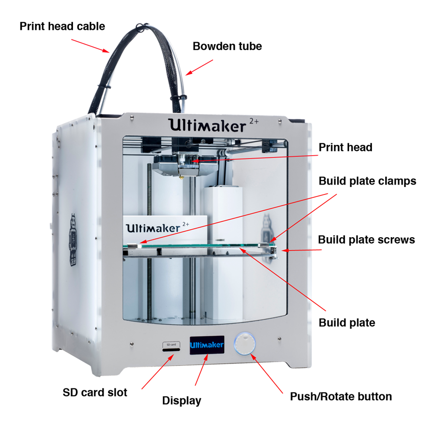
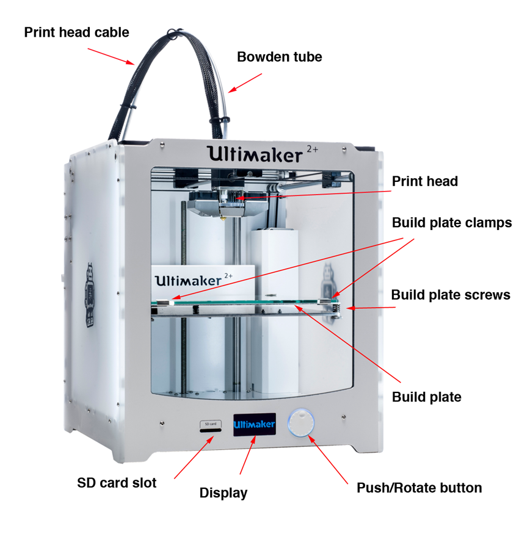

Comparing 3D Printing with Other Manufacturing
Additive manufacturing (e.g. welding, clay modelling, 3D printing) adds material, while subtractive manufacturing (e.g. CNC machining, laser cutting, electrical discharge machining) takes it away. Other types of manufacturing include forming, injection molding or casting, which are the conventional production methods. 3D printing is a form of additive manufacturing as it creates objects by adding layer upon layer of material until the shape of the object is formed.
Like all additive and subtractive manufacturing, 3D printing is suitable for producing prototypes and small products that are expensive to produce using other manufacturing processes. Compared to the conventional manufacturing on a large-scale production, 3D printing is much slower and more expensive.
Pros and Cons of 3D Printing
Strengths
There is a saying by the lecturers: if you can draw it, you can print it! Meaning to say if we are able to design anything in Fusion 360/ or other CAD software, we can print all of them. Using 3D printing is faster to produce prototype, which the designs are even customised using CAD. 3D printing can produce structures, such as complex or hollow interior sections, that are impossible to produce using non-additive processes. Most of the 3D prints are made up of up lots of hollow sections to save money, material and printing time, while still maintaining a certain structural integrity.
As an additive manufacturing, 3D printing also generates less waste than subtractive processes, since no material is cut away or discarded (with the exception of build adhesion plates. The filaments that are used can be eco-friendly, like the PLA filaments that SP uses.
Weaknesses:
One of the major disadvantages of using 3D printing is the slow and tedious process, plus it will be very expensive for large-scale production. Another disadvantage is that 3D print parts do not have the strength, heat resistance (since the material has low melting point) and surface finish for final parts. Tiny pores in the wall surfaces are resulted from 3D printing, which allows easy contamination.
There are also many constraints of 3D printing, which will be covered later on.
Principles of 3D Printing
Fused Deposition Modelling (FDM) is the most common method used in 3D printing. (Other methods include Stereolithography, Selective Laser Sintering and Digital Light Processing). It melts and deposits layers of materials on the print bed, then these layers fuse together in a pattern to create an object. The material is usually melted just past its glass transition temperature, and then extruded in a pattern next to or on top of previous extrusions, creating an object layer by layer. The print head and/or print bed will move to the correct X/Y/Z position for placing the material.
Workflow

- Design a 3D model using CAD software (Fusion 360)
- Converting it into .STL (Standard Tessellation Language) file which is a representation of 3D objects.
- Using a Slicing software (Cura) to convert .stl files into layers for printing. At this step, we can also adjust the settings to our preference.
- These sliced layers are then saved as .gcode which gives instructions to control the printer.
- The 3D printer (Ultimaker 2+) reads the .gcode file and prints the object.
3D Printers
These are the 3D printers we can find in SP and the recommended Cura settings:
 

Types of filament: PLA, TPU, ABS, PETG. SP uses PLA (Polylactic Acid) as it is made from plants rich in starch - thus being 100% biodegradable - and it can work with low temperature (Printing: 190 - 210°C, Softening: 60°C). Advantages of using PLA include environmentally-friendly, painting with Acrylic paints, less particle emission and allowing sharper details. The disadvantages are easily deformed under heat and getting brittle over time due to moisture.
Factors to consider / Constraints
Ventilation: The printer can get heated up easily and fire may break out.
Failure: We need to periodically monitor the process as failures can occur, which may result in a lump of mess.
Time: Depending on the size of product, the printing process can be from few minutes to hours. Hence, we should plan when we are going to the lab.
 |
Layer height: Thickness of each sliced layer. Fine prints take a longer time to print. This is important especially for curved surfaces, so that the surface will be printed out smoother. |
 |
Wall thickness: The thinner the wall, the easier it is for the wall to collapse. This is due to the area of contact between each layer. |
 |
Overhang/Angle: There is a certain angle to which the overhang part can be left hanging without collapsing. A support is needed of the angle exceeds a certain value (usually 45°). |
| Clearance: Take hex nut and bolt for example. When clearance is too small, the nut may not be able to rotate. When clearance is too large, the nut will then rotate loosely and wobbly. A good clearance will allow the nut to rotate about the bolt with stability. | |
 |
Bridging: The distance between the pillars on which the bridging region is should not exceed a certain length (usually 20mm), so that the region will not sag. Otherwise, a support is needed. |
| Anisotropy: A horizontal piece and a vertical piece are printed with the same thickness. When we attempt to break both pieces, the vertical piece is easier to break than the horizontal one. | |
| Infill: In order to save time and material, the solid sections of the object are printed with a infill pattern. Usually we use an infill of 15-30%. We should avoid using more than 50% unless the space in between the walls needs to be solid. | |
| Bed ahesion: allow the first layers of a 3D print adhere to the surface and provide build support. Rafts are primarily used to help stabilize models with small footprints, or to create a strong foundation on which to build the upper layers of your part. Brims hold down the edges of your part, which can prevent warping. Skirts help prime your extruder and establish a smooth flow of filament. | |
| A good 3D printer can usually handle an overhang angle of 50 deg before it fails. Hence, in order to have good overhanging prints, we need supports. Supports can be easily removed after printing. |
Source: FABLAB@SP (Blackboard)
Assignment
Test the features of 3D printer (Group Project)
The class is split into groups of 4, and each member has to design a model to test a characteristic of the 3D printer.
- (Click on these links to take a look at my group members' documentation of their tests)
- Bryan - Bridging
- E Chen - Overhang
- Zhan Li - Clearance
I did infill test. First step is to design a few structures for the different infill percentage. I extrduded a cylinder of ⌀20mm × 20mm, then replicate three more using Rectangular Pattern.
(Click on the images to see a clearer image)
{kind=link}
To indicate the different infill percentages on each cylinder, I embossed the numbers on the side wall. The top layer is going to be removed when slicing, so I didn't extrude from the top. I also created a base in case I need to keep, but I decided not to print it.
{kind=link}
{kind=link}
I'm now done with designing. What's next? Right-click on a body, go to Make > 3D Print. Click OK, and this 3D object will be saved as STL file. Repeat for the remaining bodies. Then launch Ultimaker Cura and import all of them (except the base).
{kind=link}
{kind=link}
Insert the SD card form 3D printer, then select "Save to Removable Disk". Now I can print it. But hey, after about 10 minutes into printing, I realised I can already see the infill lines, so instead of waiting another an hour, I decided to abort. I also realised I forgot to set Wall Count of Top Layer to 0, so even if the print is allowed to complete, I won't be able to see the infill. That aside, I am grateful for the Brim Build Plate Adhesion which I didn't remove, turns out I do have to collect 4 disks like that, instead I can just pull out everything in one piece. (See final print below!)
One takeaway is, the higher the infill percentage, the longer the printing process. So we should always try to use around 20% infill for our objects, possible.
Design an object that is uniquely for 3D printing (Individual)
For individual component, I am required to design and 3D print an object that could not be made subtractively. The design I made is a sphere within a wired-frame cube.
When I load my object into Cura, I see red parts when i orbit to the bottom. These are overhangs, usually when the angle exceeds 50%. If I proceed to print without support, at least the first few layers of overhang will collapse, making the whole print fail/look ugly. I can see how each layer is printed by slicing first, click 'Preview', and drag the slider on the right.
To solve this issue, I added a support 'for everwhere', since 'from build plate' does not give support for the 90° frame at the top. Finally, I set the recommended settings in Cura then Slice.
{kind=link}